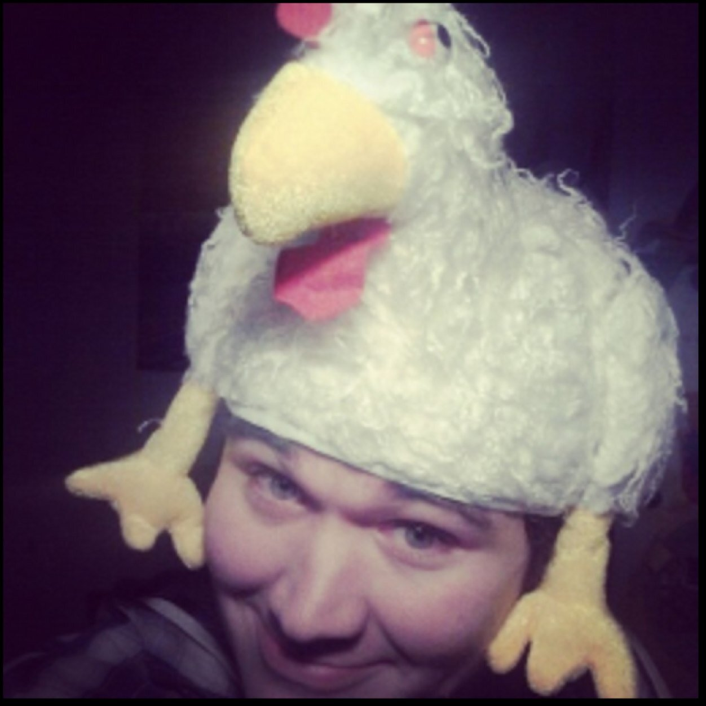

Informatie over mij!
Ik ben Lars van Schaik AKA Vako
Zoals hierboven te zien is ben ik er zeer van overtuigd dat de kip een god is,
en dan niet zomaar een kip maar "de heilige KIP"
Zoals hierboven te zien is ben ik er zeer van overtuigd dat de kip een god is,
en dan niet zomaar een kip maar "de heilige KIP"